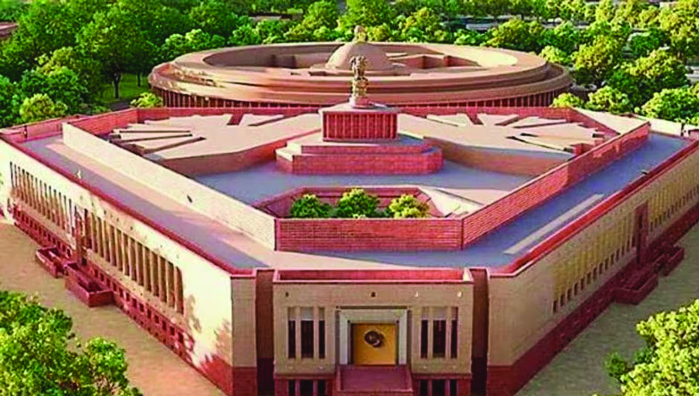
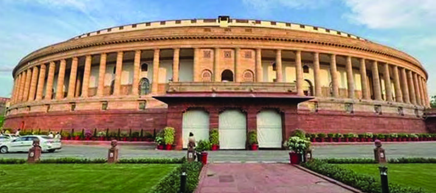
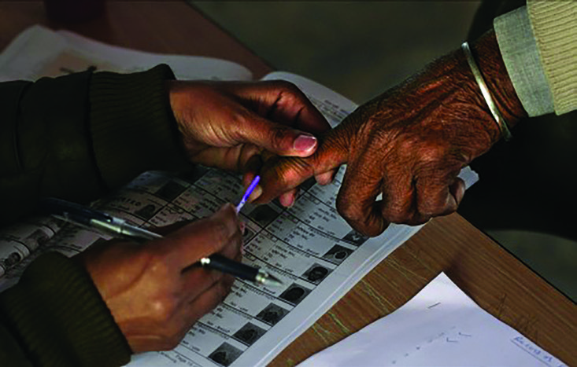
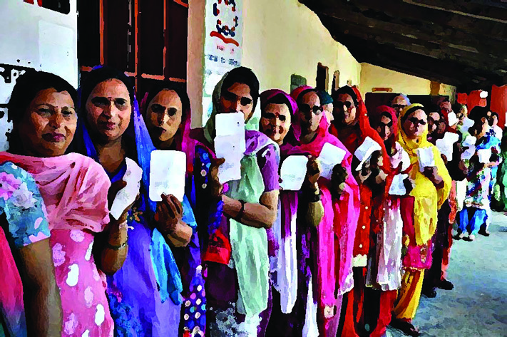
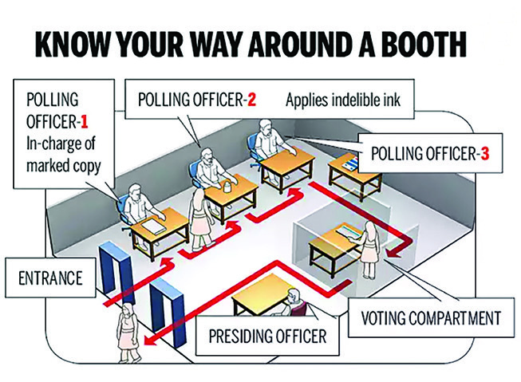
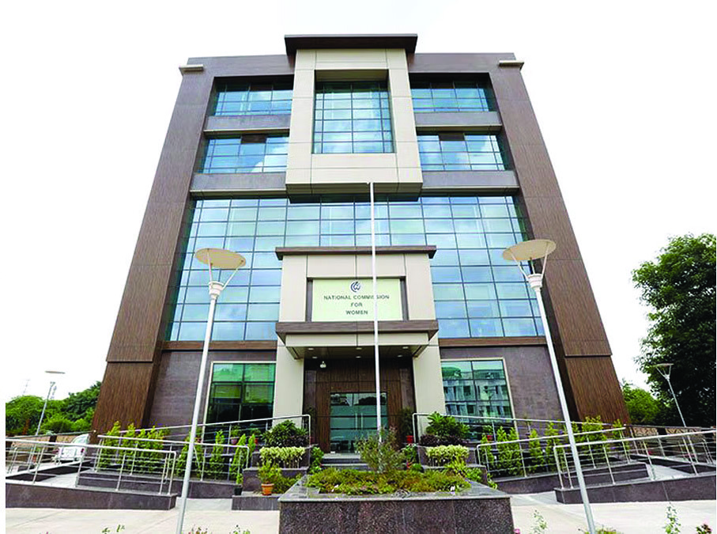
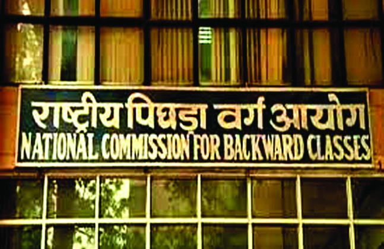

EXTENSION OF DEMOCRACY THROUGH INSTITUTIONS 7 Democracy is not only a system of governance but also a system for fulfilling various needs and aspirations of the citizens and thereby ensuring a dignified life. In India, many constitutional institutions have been working for the establishment of democracy and its all pervasive growth.

Figure: fig_ch49_p025_01Figure: fig_ch49_p025_02

Figure: fig_ch49_p025_03
Page 26
Chapter 7 130 Social Science I These bodies can be classified into two: constitutional bodies and extra constitutional bodies. The constitutional bodies are autonomous bodies formed when the Constitution came into force. The Constitution is the source of power of the constitutional bodies. Constitutional amendment is essential for effecting any change in the power or structure of these bodies. On the other In the news given above the different mechanisms that have been set up for the institutionalisation of democracy are mentioned. Can you find out what they are?
y National Commission for Minorities
y
y
y
Women safety measures are essential New Delhi : The National Commission for Women has announced that it will give instructions to the governments to take measures to prevent the increasing violence against women and to implement women’s safety laws strictly. Madhya Pradesh: The National Commission for Backward Classes said in a press conference that it would recommend starting more educational institutions for the backward classes. The Commission said that it will also include measures to address the economic backwardness of these sections. Violation of Human rights: The Commission has registered a case New Delhi : The National Human Rights Commission has voluntarily registered a case against human rights violation in the labour sector. The action is based on the news about this in various media. New Delhi : Notification for the 18th Lok Sabha Elections has been issued. The Commission informed that the election in the country has been decided to be conducted in 7 phases. Prior to this, the Commission also started the procedures including revision of the voter list. Lok Sabha Election Notification New Delhi : The National Commission for Minorities has expressed concern over atrocities against minorities. The Protection of Minority Rights: Commission intervened Right to Education will be ensured: National Commission for Backward Classes Commission also put forward recommendations to protect the rights of religious, linguistic and cultural minorities. Steps for the economic and social uplift of Scheduled Caste and Scheduled Tribes New Delhi: The National Commission for Scheduled Castes and the National Commission for Scheduled Tribes have announced that steps will be taken for the progress of the Scheduled Castes and Scheduled Tribes in the country. The commissions also said that recommendations would be made for timely provision of basic facilities including housing, education and reservation benefits to bring these sections into the mainstream of society.
Figure: fig_ch49_p026_01Figure: fig_ch49_p026_02
Page 27
Extension of Democracy through Institutions 131 Standard IX The images above depict various stages of the electoral process. Examine each picture and identify the specific step in the election process that it represents.
y Queuing up to vote
y
hand, extra constitutional bodies are formed by the laws passed by the Parliament. They can be given constitutional status as and when required. These bodies play a pivotal role in practically implementing the fundamental values of Constitution such as equality, liberty, social justice, and secularism in Indian society. These institutions achieve the basic goals of democracy by integrating all sections of the people of the country. The success of democracy hinges on the active participation of marginalised and weaker sections of society. For that, their wishes and aspirations need to be considered fairly. Constitutional and extra constitutional bodies play a vital role in realising this goal, in India. Let us examine how the institutions mentioned above help in the spread of democracy.
Figure: fig_ch49_p027_01

Figure: fig_ch49_p027_02

Figure: fig_ch49_p027_03Figure: fig_ch49_p027_04

Figure: fig_ch49_p027_05
Page 28
Chapter 7 132 Social Science I Election Commission It is known that elections play a pivotal role in democratic governance. In a democratic system of governance, people's representatives and rulers come to power through elections. Therefore, it is essential to have an independent and authentic system to guarantee just and impartial elections. In India, the Election Commission, a constitutional body, is entrusted with this vital responsibility. The Election Commission of India came into existence on 25 January 1950 based on Article 324 of the Indian Constitution. The present Election Commission consists of a Chief Election Commissioner and two Commissioners. They are appointed by the President of India. The tenure of office of the members of the Commission is 6 years or up to the age of 65. The Chief Election Commissioner can be removed from his position only through impeachment. The activities of the Election Commission in different states and the Union Territories are coordinated by the Chief Electoral Officers. As a constitutional body formed for the establishment of democracy, the Election Commission performs a significant role. Listen to the conversation given below. Election Commission Headquarters - New Delhi Electronic Voting Machine (EVM) General election in India is the largest democratic process in the world. Electronic Voting Machine (EVM) is the system executed by the Election Commission of India to ensure transparency in the process of election and to prevent election crimes. Electronic Voting Machine was first experimented in the by-election to the Paravur Legislative Assembly Constituency of Kerala in 1982. EVM was used in all the 543 constituencies in the Parliament elections in 2004. An Electronic Voting Machine has two units: the Control Unit and the Ballot Unit. The ‘Voter Verified Paper Audit Trial’ (VVPAT) system is also included to ensure transparency. Electronic Voting Machines (EVMs) help to speed up the election process, timely declaration of results, and to reduce election costs .
Extension of Democracy through Institutions 133 Standard IX Can I vote in this Parliament Election? No, you should be minimum eighteen years old to get enrolled in the voters list. It is the Election Commission that prepares the voters list and issues identity card in our country. It is clear from the conversation that in our country the Election Commission prepares voters list and issues voter identification cards. Let's examine what other functions the Election Commission has to perform. Impeachment Impeachment is the process of removing persons holding constitutional positions through parliamentary proceedings. Preparation of electoral roll and issuance of identity card.
Supervise, administer, and control the elections to the offices of the President and the Vice President of India, Members of the Lok Sabha and the Rajya Sabha, and State Legislative Assemblies. Promulgation and enforcement of the codes of conduct. Recognition of political parties and allotment of symbols to them.
Issue election notifications, receive, scrutinise and accept nominations, and publish the lists of candidates. Schedule the dates for poll and its counting, declare results and resolve disputes. Audit election expenses and take appropriate follow-up actions. Election Commission - Functions Our country has well-organised laws to define the duties and responsibilities of the Election Commission, and to make the extensive and complex electoral system, efficient and participatory. The People’s Representation Acts of 1950 and 1951 perform these functions. The Parliament passed these laws in accordance with Article 327 of the Constitution. The Acts detail the election procedure. They also detail every step from the submission of nomination papers to the declaration of election results. Let's get to know with these acts.
Figure: fig_ch49_p029_01Figure: fig_ch49_p029_02
Page 30
Chapter 7 134 Social Science I
y Prepare a digital album including the names of Election Commissioners of India and their tenures.
y Collect more information regarding the activities of Election Commission.
y Can the voters caste their votes only in the polling booth? Has the Election Commission made any other arrangements? Organise a discussion in the class. Representation of People Act, 1950 The Representation of People Act, 1950 is an act codifying the provision for fixing constituencies for elections to Parliament and state legislatures, delimiting their boundaries and preparing electoral rolls. The Act stipulates that all constituencies are single-member constituencies. The Act provides for matters such as division and delimitation of constituencies, appointment of Chief Electoral Officer, District Returning Officers and Electoral Registration Officers, and the preparation of electoral roll. Representation of People Act, 1951 The Representation of People Act, 1951 is an act to provide for the conduct of elections to the Indian Parliament and State legislatures and to determine the eligibility and disqualification of those elected, and provide for the settlement of election disputes. It deals with the crimes related to election, and the eligibility and disqualification of the members of the Parliament. It defines the invalidation of the members of Parliament and state legislative assemblies, system of election, and the qualifications and duties of the Chief Election Commissioner, District Election Officer, Election Observers and Returning Officers. It also defines the registration of political parties. According to this act, any organization that wants to become a political party has to register with the Election Commission. It also stipulates the criteria for national party and regional party status and the rules to obtain election symbols. National Voter's Day January 25th is observed as the National Voter's Day. The observance of this day began in 2011. The Election Commission of India came into existence on 25 January 1950. It was decided to observe January 25 as the National Voter's Day as it was the day of establishment of the Election Commission. The National Voter's Day is observed for encouraging all voters of the country to actively intervene in the process of election and to cast their votes.
Figure: fig_ch49_p030_01Figure: fig_ch49_p030_02
Page 31
Extension of Democracy through Institutions 135 Standard IX State Election Commission Apart from the Central Election Commission, there are state-level election commissions in each state. Election Commissions came into existence in the states through the 73rd and 74th Constitutional Amendments. These are formed in accordance with the Articles 243 (K) and 243 (ZA) of the Constitution. The State Election Commissions execute the duties like preparation of the voter's list for elections to the local self-governments, and the supervision and control of the elections. The Commission also decides the reservation of seats in Local Self-Governments. Kerala State Election Commission came into existence on 3 December 1993. The Election Commission has an important role in forming a democratic government in a richly diverse and highly populated country like India. There were several sections in our society that were marginalised on the basis of social, economic and gender inequalities. The Election Commission has performed the duty of laying the strong political foundation of Indian democracy by making these sections of people participate in the process of election. This constitutional institution makes democracy stronger and meaningful through transparent and fair conduct of the elections at various levels in the country. National Human Rights Commission Note the date in the given calendar. Find out what is special about this day. Sukumar Sen, the first Chief Election Commissioner of India
Chapter 7 136 Social Science I Human rights violations are denial of the civil rights and values promised by the Constitution of India. The Human Rights Commission was formed in our country with the objective of ensuring civil rights by avoiding violations of human rights. The National Human Rights Commission was established on 12 October 1993. New Delhi is its headquarters. There are six members in the commission including the Chairperson. The Chairperson would be a retired Chief Justice/Judge of the Supreme Court of India. The members of the commission are appointed by the President of India. The tenure of these members in office is three years or up to the age of seventy. Hope you may make preparations for the observance of the International Human Rights Day under the auspices of the School Social Science Club. What would be the programmes that you plan in connection with this?
y Poster Exhibition
y Seminar
y
y Media bring to us, from various parts of the world, a lot of news regarding the situations like wars, riots, terrorist attacks that make decent living of the people difficult. Do you know that such human rights violations happen in our locality? Have you come across such incidents? List them.
y Discrimination against children
y Discrimination against women
y
y
Figure: fig_ch49_p032_01
Page 33
Extension of Democracy through Institutions 137 Standard IX Headquarters of the National Human Rights Commission – New Delhi Protection of Human Rights Act, 1993 The Human Rights Protection Act is the act that came into existence directing that Human Rights Commissions and Courts shall be established at the national and state-levels for the protection of human rights and related matters. The act came into force on 28 September 1993. The national and state level Human Rights Commissions function in accordance with this act. It defines Human Rights Court, National Minority Commission, National Scheduled Castes Commission, National Women’s Commission and State Human Rights Commission. The act defines the formation of the National Human Rights Commission, the appointment of its members, including the Chairperson, their removal from office, tenure in office, and the activities and powers of the Commission. The procedure of inquiry of the Commission, submission of report, formation of State Human Rights Commissions, and the procedure of their activities and inquiries are laid down in this act. Human Rights are the rights to life, liberty, equal treatment and dignity, as assured by the Constitution of India, and international agreements ratified by India. To evaluate the functioning and efficiency of the systems for protection of human rights and give suggestions. Analyse the international agreements and declarations regarding human rights and take appropriate steps. To visit jails and rehabilitation centres and make recommendations for reforms. Become a party to court proceedings in matters related to the violation of human rights. To conduct inquiries on complaints related to human rights violation. Functions of the National Human Rights Commission To examine the human rights violations committed by the law enforcement officers and other public servants, and take necessary actions after examining the failures in the prevention of such incidents.
y Given above are some of the important responsibilities of the National Human Rights Commission. Collect newspaper cuttings related to the activities of the Commission and prepare a digital album including the collected news.
Chapter 7 138 Social Science I Human rights have an incomparable position in a democratic system. A democratic system becomes complete and meaningful only when its citizens enjoy their rights with dignity and pride. The National Human Rights Commission plays an important role in the protection of the human rights of the citizens and thereby ensuring the extension of democracy. National Commission for Women State Human Rights Commission Similar to the National Human Rights Commission, there are Human Rights Commissions in the States also. Kerala State Human Rights Commission came into existence on 11 December 1998. There are three members in the Commission including the Chairperson. A retired Chief Justice/Judge of the High Court shall be the Chairperson of the Human Rights Commission. Members of the Commission are appointed by the Governor.
y Identify the issues in which the National Human Rights Commission intervened recently.
y Amnesty International is a voluntary organisation working against human rights violations at the international level. Are there voluntary organisations of this type working in our country? Identify. Ensure equal justice Ensure gender equality Ensure the safety of women Protect women’s rights Ensure opportunity for education and occupation End violence against women Protect from sexual violence
Extension of Democracy through Institutions 139 Standard IX The most important function of the National Women’s Commission is to intervene in the various issues faced by women in society and to suggest legal solutions. The commission was founded on 31 January 1992. The commission consists of a chairperson, five members and a member secretary. The members of the commission are appointed by the Government of India. Their tenure of office is three years. The National Women’s Commission is equipped with extensive powers for the protection, equality and rights of women. Observe the picture above. What are the issues raised by women agitators? Have you noticed any other issues faced by women? Discuss them.
y Discrimination at working places
y
y
y Headquarters of the National Women’s Commission, New Delhi International Women’s Day International Women’s Day is observed with the objectives of the protection of women’s rights, prevention of atrocities and discrimination against women, and to ensure women’s participation in social progress. March 8 is International Women’s Day. The United Nations Organisation aims to prevent atrocities against women, and to ensure women's empowerment beyond all political, social and economic discrimination.
Figure: fig_ch49_p035_01

Figure: fig_ch49_p035_03Figure: fig_ch49_p035_04
Page 36
Chapter 7 140 Social Science I Functions Examine the constitutional provisions and laws for the safety of women Submit proposals for legislation to protect women’s rights Intervene in various issues faced by women and suggest solutions Advise governments in policy formation on matters concerning women Give suggestions to eliminate inequality and discrimination faced by women Activities for ensuring gender justice There are laws in the country to ensure the rights and safety of women. Let us get to know some of them. Dowry Prohibition Act, 1961 The Dowry Prohibition Act was passed by the Parliament in 1961 to eradicate the evil practice of dowry from society and prevent atrocities in the name of dowry. Dowry is the exchange of wealth on the occasion of marriage as per prior agreement or under compulsion. If a person consents to marriage based on the promise of certain sum of money, jewellery or wealth, it is also dowry. Both, accepting and giving dowry are punishable under this law. Protection of Women Against Domestic Violence Act, 2005 Protection of Women Against Domestic Violence Act came into force in India on 26 October 2006. This law protects women from violence by their life partners or relatives. The broad definition of domestic violence includes all activities that insult women or cause them danger. This
y Collect news and pictures about the activities of the National Women’s Commission.
y Include the collected information in the Social Science album. y Identify, with the help of teachers, the cases/incidents the National Women’s Commission intervened in for the protection of the rights of women.
Figure: fig_ch49_p036_01Figure: fig_ch49_p036_02
Page 37
Extension of Democracy through Institutions 141 Standard IX State Women’s Commission Kerala State Women’s Commission came into existence on 14 March 1996. Its headquarters is in Thiruvananthapuram. Poet Sugathakumari was the first chairperson of the commission. The State Women’s Commission consists of four members other than the chairperson. The official term for a member is five years. The responsibilities of the commission include intervention in different cases where women face denial of justice and suggest appropriate decisions, and to report to the government about the procedures in this regard.
y Make preparations for the observance of the National Women’s Day in your school.
y Prepare an invitation letter for the same. y Collect news about problems faced by women and intervention of the Women’s Commission in those issues and make a news album. law assures protection, boarding and financial help to women who are victims of domestic violence. The rights of all citizens should be protected in a democracy. Gender justice is very important in it. It is realised only when the rights and dignity of women are protected. The Women’s Commission takes steps to legally overcome the anti-women tendencies in society from time to time. The Women’s Commission plays an important role in strengthening democracy by ensuring gender justice through interventions that ensure equal opportunity and rights. The National Commission for Minorities Make up for the economic backwardness of minorities Start more educational institutions to make up for the educational backwardness of minorities Minority organisations raise demands NEWS Protection of the scripts of linguistic minorities imperative Ensure the social progress of minorities Minority organisations raise demands NEWS
Chapter 7 142 Social Science I Read the television news given above. The news is about the demands raised by minority organisations about the various issues faced by the minorities. What are the issues raised here? Minority Commission was formed to ensure that the interests of the minorities of the country are protected and that the laws enacted for their wellbeing are effectively implemented. The most important function of the commission is to ensure the welfare of the religious, linguistic and cultural minorities by protecting their rights. The National Minority Commission came into existence on 17 May 1993. The commission consists of a chairperson, a vice chairperson and five members. The members of the commission are nominated by the central government. They are appointed by the President of India. Their term of office is three years. The National Minority Commission has extensive powers and functions to execute. Evaluate the functioning of the constitutional provisions and laws for the protection of the minorities. Evaluate the progress of the social development of the minorities. Submit reports on the issues and crises faced by minorities from time to time. Examine the complaints regarding the violation of the rights of minorities and make recommendations for further action. Submit suggestions for the upkeep of the protection of minorities. Functions
y Economic backwardness
y
y
y
Figure: fig_ch49_p038_01Figure: fig_ch49_p038_02
Page 39
Extension of Democracy through Institutions 143 Standard IX State Minority Commission The Kerala State Minority Commission was established in 2013. There are four members in the commission including the chairperson and the vice chairperson. The state government nominates them. Their term in office is three years. The responsibility of the commission is to ensure that religious and linguistic minorities enjoy the constitutional rights granted to them. The commission also makes recommendations regarding the establishment of educational institutions by minorities.
y Collect news regarding the interventions of the National Minority Commission.
y Identify whether there are linguistic minorities in your area.
y Discuss and prepare notes on the issues faced by the linguistic minorities and their remedies. The participation and inclusion of all sections of the people are important in a democratic system. The growth and progress of the religious, linguistic and cultural minorities is imperative for this. Along with this, the general awareness that the minority welfare is the responsibility of the majority should be created. The efforts of the Minority Commission towards the realisation of these ends play an important role in the extension of democracy. Given above are the words of Jawaharlal Nehru, the first Prime Minister of India. What are the developmental activities that should be done for the Scheduled Caste – Scheduled Tribe sections, according to Nehru? Discuss. Roads and communication should be given the highest priority in Scheduled Castes and Scheduled Tribes areas. Without them, nothing we do will be effective. It is clear that many things are needed such as schools, health services and cottage industries. But we must always remember that we do not interfere in their way of life and only help them to live according to their own way. (Jawaharlal Nehru, June 7, 1952) National Commissions for Scheduled Castes – Scheduled Tribes
The Scheduled Castes and Scheduled Tribes Commissions were formed with the objective of protecting the Scheduled Castes and Scheduled Tribes from discrimination and exploitation, and bringing them to the mainstream of society. It is important to protect their cultural diversities and identities along with this. Both the commissions came into existence in 2004. The commission consists of a Chairperson, a Vice Chairperson and three other members. The members of the commission are appointed by the President of India. The members’ term in office is three years. The Headquarters of Scheduled Castes and Scheduled Tribes Commissions – New Delhi SC and ST (Prevention of Atrocities) Act, 1989 The SC and ST (Prevention of Atrocities) Act came into force with the objectives of the prevention of atrocities against the SCs and STs, establishing special courts for handling such crimes, and taking steps for their well-being and rehabilitation. The act came into force in the year 1989. This act defines the atrocities
Extension of Democracy through Institutions 145 Standard IX Submit reports to the governments on the challenges faced by the Scheduled Castes and Scheduled Tribes and the suggestions for their remedies. Evaluate the effectiveness in the functioning of the constitutional provisions and laws for the welfare of the Scheduled Castes and Scheduled Tribes Inquire into the complaints regarding the atrocities against the Scheduled Castes and Scheduled Tribes Coordinate the efforts for the welfare, protection and growth of the Scheduled Castes and Scheduled Tribes Scheduled Caste – Scheduled Tribe Commissions - Functions and crimes committed against the SC and ST sections, prescribes the punishment for those who commit such crimes, and stipulates the process for their rehabilitation. Kerala State Scheduled Castes and Scheduled Tribes Commission The Kerala State Scheduled Castes and Scheduled Tribes Commission was formed for the welfare and protection of the Scheduled Castes and Scheduled Tribes of Kerala. The commission consists of the Chairperson and two other members. They are appointed by the Governor. The term of members in the office is three years. The main responsibility of the commission is to conduct inquiries on complaints regarding cases of violation of the rights of the Scheduled Castes and Scheduled Tribes and to make recommendations for further action in those cases. The commission is also entrusted with the responsibility to evaluate the socio-economic conditions of the said sections of the society and to make recommendations for ensuring their progress. Democracy is complete only when it ensures the active participation of the socially marginalised sections of people in the course of history. Their traditional knowledge and culture should be protected in their original form while ensuring their inclusion in modern society. The activities of the Scheduled Castes and Scheduled Tribes Commissions accelerate this process and strengthen democracy.
y Find out and enlist the various welfare projects implemented by the government for the Scheduled Castes and Scheduled Tribes.
y Collect newspaper reports regarding the interventions of the National Scheduled Castes and Scheduled Tribes Commissions.
Chapter 7 146 Social Science I Carefully read the speech by Dr. Ambedkar. What are the suggestions put forward by him for the progress of the backward sections? The National Commission for Backward Classes was established with the objective of the uplift of the socially and economically backward sections. Submitting suggestions to address the backwardness of the socially and economically backward sections is also a responsibility of the commission. The commission was established in 1993. It consists of a Chairperson, a Vice Chairperson and three members. The members of the commission are appointed by the President of India. The official term of the members is three years. The commission received constitutional status in 2018. Education should be made accessible to all. The policy of the education department is to make higher education as affordable as possible for the people belonged to the backward class. If all these communities are to be raised to equality, the only way out is to give special consideration to the backward sections. Dr. B. R. Ambedkar Budget Speech in the Legislative Council, 1927 Feb. 24 National Commission for Backward Classes (NCBC)
Extension of Democracy through Institutions 147 Standard IX National Commission for Backward Classes- Functions Ensure the effective implementation of the constitutional provisions and laws for the backward classes. Submit report to the government on the activities of various systems for the welfare of the backward classes. Examine the demands related to backward status and give suggestions to the government. To make recommendations for taking steps against atrocities faced by backward classes and to ensure justice. Kerala State Backward Classes Commission (KSCBC) Kerala State Backward Classes Commission came into existence in 1993. The term in office of the commission is three years. The commission has the responsibility to consider the socio-economic conditions of the backward communities and to make recommendations to include the deserving ones in the Reservation List and to grant them due benefits. Headquarters of the National Commission for Backward Classes – New Delhi
y Find out the present Chairpersons of the National and State Backward Classes Commissions.
y Prepare a note on the activities of the National Commission for Backward Classes. It is imperative to address the socio-economic backwardness of the different sections of people in our country with such a large geographical area, high population and cultural diversity. This backwardness can be redressed only by ensuring equality of opportunity, social justice and participation envisioned by the Constitution. Democracy will be complete only when the socially and economically backward sections of people are brought to the mainstream of society. The Spread of Democracy: The Role of Institutions
Figure: fig_ch49_p043_01

Figure: fig_ch49_p043_02Figure: fig_ch49_p043_03
Page 44
Chapter 7 148 Social Science I The success and failure of a democratic system of administration depend on the participation of the people. The above- mentioned constitutional and extra constitutional bodies have an important role in ensuring the participation of different sections of the people in the political process. For instance, the Election Commission expands the scope of political democracy by fostering an environment where citizens can exercise their political rights freely and without fear, and thereby broadening the foundation of democratic participation. Since 1951-52, the Election Commission has been taking measures to strengthen electoral democracy and to ensure free and just polls. The Election Commission's functions, include the delimitation of electoral constituencies, preparation of electoral rolls, implementation of universal adult suffrage, recognition of political parties, implementation of electoral reforms, and promotion of electoral literacy, which have significantly strengthened Indian democracy. The National Human Rights Commission, National Women's Commission, National Minority Commission, National Scheduled Castes Commission, National Scheduled Tribes Commission and the National Commission for Backward Classes play a vital role in empowering historically marginalised sections of the people, integrating them into the political process, and promoting their inclusion in the mainstream of society. Beyond electoral democracy, the issues of the marginalised sections should be resolved with special attention. It is this function that the above-mentioned commissions perform. These commissions try to solve the problems related to social backwardness as well as problems faced by individuals. Union Public Service Commission (UPSC) Union Public Service Commission (UPSC) is the constitutional body instituted for recruitment by the Government of India. The Commission came into existence based on Article 320 of the Constitution of India. The Commission consists of a Chairperson and ten members. They are appointed by the President of India. Their tenure in office is six years or up to the age of sixty-five. UPSC conducts recruitment to the All India Service and the Central Civil Service. The chief responsibility of the UPSC is to make recruitments to the central government services through examinations and interviews. State Public Service Commissions are responsible for conducting recruitment for state government services. Kerala Public Service Commission (KPSC) conducts recruitments to the state government services, in Kerala.
Figure: fig_ch49_p044_01
Page 45
Extension of Democracy through Institutions 149 Standard IX as problems faced by individuals. Along with the protection of civil liberties, it is essential to ensure the protection of the rights derived from the inherent dignity of human beings for the extension of democracy. The Human Rights Commission plays a commendable role in ensuring such rights and thereby strengthening the democratic process. The Women’s Commission makes democracy meaningful by taking steps to uphold the dignity of women by initiating steps that ensure their social advancement and prevent atrocities against them. It is the responsibility of a democratic state to ensure the protection and equal treatment of minorities. Minority Commission consolidates democracy by preventing atrocities against minorities and by ensuring rights of the minorities. The SC and ST Commissions perform significant responsibilities by taking steps to resolve the socio-economic issues faced by the Scheduled Castes and Scheduled Tribes and to integrate them into the mainstream society. The National Commission for Backward Classes undertakes the democratisation of integrating other backward sections into the mainstream society by resolving their social, economic and educational backwardness. Thus, the aforementioned institutions expand the scope of Indian democracy into social and economic domains, encompassing marginalised sections of people and enabling them to exercise their political rights, thereby fostering a more inclusive and equitable democratic framework. National Commission for Protection of Child Rights The National Commission for Protection of Child Rights is established to protect the rights of children. The commission functions under the Ministry of Women and Child Development. It came into existence on the 5 March 2007. The commission consists of a Chairperson and six members. The aims of the commission are the education, health, care, welfare, and justice of children. The Kerala State Commission for Protection of Child Rights works for protecting the rights of children, in Kerala. Organise a panel discussion in the class on 'The Role of Institutions in the Extension of Democracy.'
Figure: fig_ch49_p045_01Figure: fig_ch49_p045_02
Page 46
Chapter 7 150 Social Science I Name of the Commission Year of Formation 1 Election Commission 1950 2 3 4 5 6 1. Organise a seminar on the topic 'Women's Safety' in connection with the International Women’s Day. 2. You must have noticed the implementation of School Parliament Election in your school. Shall we conduct a model election in the class to assess the duties of the Election Commission? What are the preparations needed for that?
y
y 3. Collect boards and pictures and organise an exhibition for creating awareness about human rights violations and to suggest remedies for them. 4. Stage a play on 'the problems faced by women in the society and their solutions’ in the class. 5. Complete the table. Enter the names and year of formation of the various Commissions constituted for the extension of democracy in the table given below. Extended Activities